Packing the MagAO-X Table at LCO for Shipment¶
This procedure describes how to pack MagAO-X optical table for shipment.
Estimate Time to Complete: 2 hrs
This document can be dowloaded as pdf:
Initial Conditions¶
[ ] The optical table is in the cleanroom, on the handling cart, fully disconnected from the control electronics.
Preparations¶
[ ] Secure all optics for transport.
[ ] Check that all components on table are securely fastened.
[ ] Install dessicant.
[ ] Shrink-wrap the instrument.
[ ] Install the reflective blanket for solar shielding.
Prepare the Box.¶
[ ] Move the empty box and shipping frame into the unpacking room with the forklift, placing it on 4 furniture dollies.
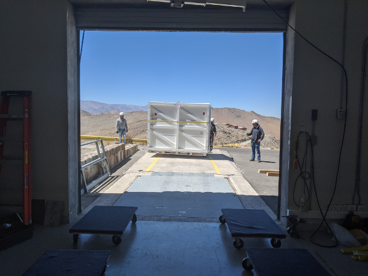
The instrument box is brought to the unpacking area with the forklift.
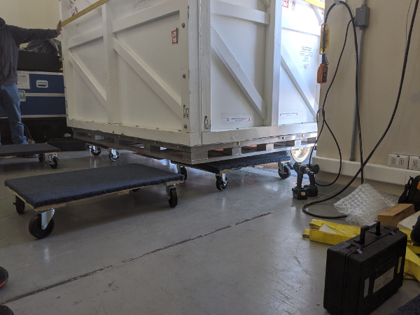
The instrument box being set down on dollies with the fork lift. Note the placement and orientation of the dollies.
[ ] Move the box towards the inside garage door, and stage 4 more dollies to accept the lid.
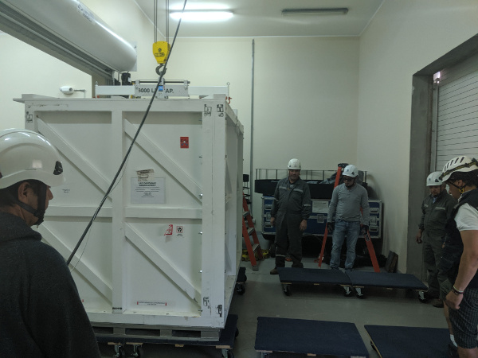
Box in position to have the lid removed.
[ ] Remove the front panel from the box, place out of the way (e.g. outside).
[ ] Remove all bolts holding the lid to the pallet
[ ] Place the straight extension on the lifting fixture, and place it in the box-lid position.
[ ] Attach the lifting fixture to the lid.
[ ] Lift the lid with the crane, and set it down on the dollies.
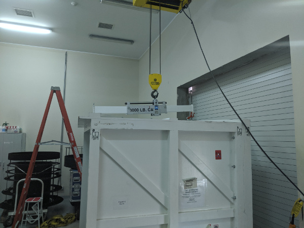
Box lid off, on dollies.
[ ] Move the pallet into the cleanroom to make room to maneuver the lid.
[ ] Then move the lid out of the way, e.g. outside on the lift.
Installing The Instrument On The Frame¶
[ ] Move the pallet and frame towards the front of the unpacking room.
[ ] Bring the instrument and cart out of the cleanroom.
NOTE: position the cart so that the taller heavier side of the instrument will set down on the side of the frame with the most wire-rope isolators. m
[ ] Install the scale between the load spreader and the crane, and place the lifting fixture in the instrument+cart position.
[ ] Install the triangle stabilizing rope ratchets, leaving them loose.
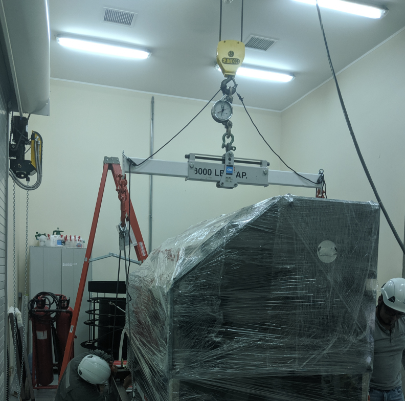
Preparation of the lifting fixture.
[ ] With the crane, carefully position the load spreader over the table.
NOTE: be sure to guide both ends of the load spreader so it does not contact the instrumetn
[ ] Attach the load spreader to the cart. Two shackles are used to extend the length. The hooks should be placed opening up.

Use two shackles for correct length.
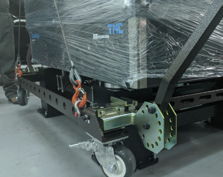
Hooks must open up on the cart to get the correct length.
[ ] Lift the instrument+cart, which weigh 1920 lbs, until all 4 wheels are off the ground. If it is out of balance, it will be necessary to manually correct.
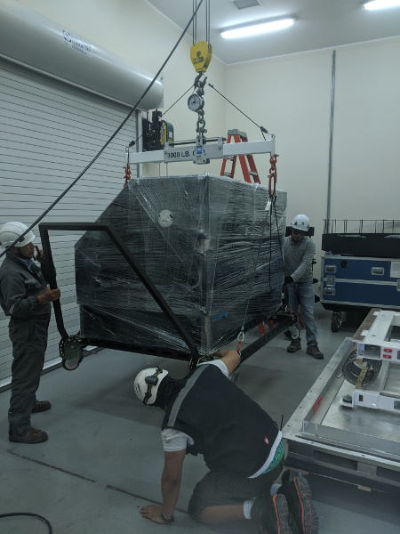
Lifting the instrument on its cart.
[ ] Adjust the load spread to find the best balance.
[ ] Tighten the triangle stabilizing rope ratchets.
[ ] With a person on each end stabilizing using the cart handles, lift the instrument to sufficient height to clear the shipping frame.
[ ] Carefully roll the pallet and frame under the instrument
[ ] Lower the instrument slowly to just touch the frame, but do not unload the crane.
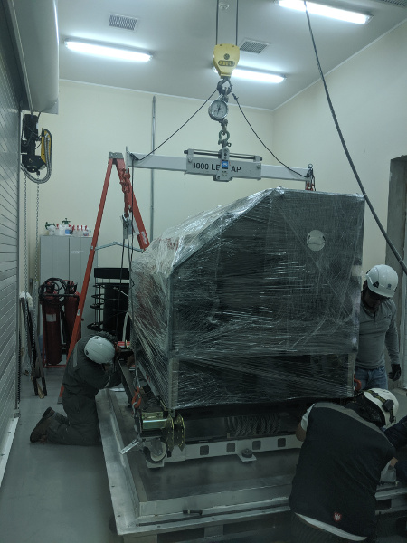
The instrument on the frame.
[ ] While the instrumetn is still supported by the crane, start bolts at each corner to guid the instrument down.
[ ] Lower the instrument until half the weight is off the crane.
[ ] Start all bolts, including installation of the Emerson Clamp base plates.
[ ] Fully lower the instrument, such that the crane is still supporting the cart weight of 320 lbs
[ ] Tighten all bolts holding the instrument to the shipping frame.
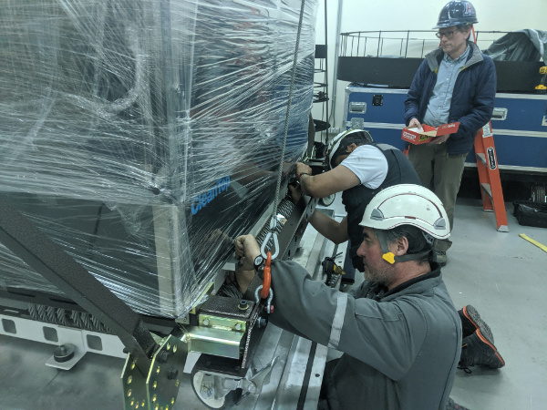
Tightening the bolts.
[ ] Remove the 8 bolts holding the cart to the table.
[ ] Lower the cart so that it rests on the pallet.
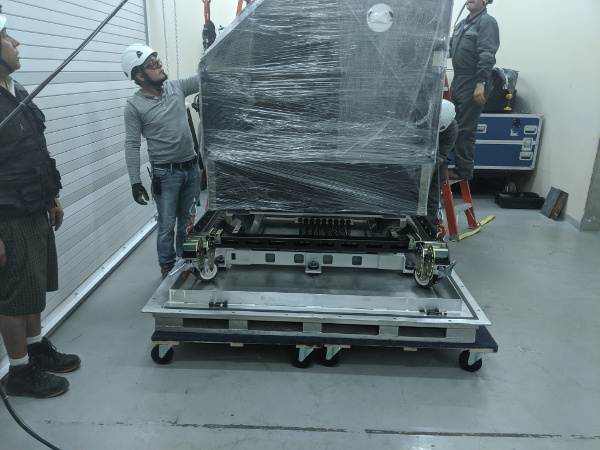
The cart lowered onto the pallet.
[ ] Disassemble the cart, moving the pieces to storage area.
[ ] Install the Emerson Clamps.
[ ] Arm all drop-n-tells, and install the data loggers.
Install the Lid and Door¶
[ ] Move the pallet and instrument on the dollies back into the cleanroom to make space for the lid
[ ] Bring the lid back into the unpacking area and position it to be lifted on. The open side goes towards the MagAO-X label on the instrument.
[ ] Put the load spreader back in the position to balance the lid, and attach it with the crane to the lid.
[ ] Lift the lid, and roll the instrument under the box.
[ ] Set the lid down on the pallet
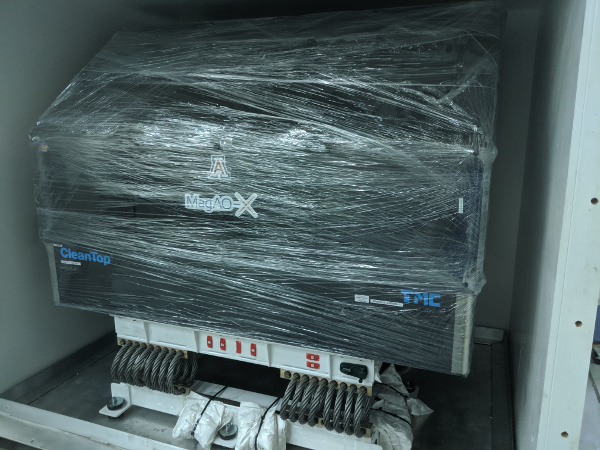
MagAO-X on the shipping frame inside the box.
[ ] Install the bolts along the bottom of the lid, securing it to the pallet.
[ ] Bring the front door panel back inside, and lift it into position.
[ ] Bolt the lid on.
[ ] Remove the liffting eyes from the box lid and stow them on the lower left insspection panel.